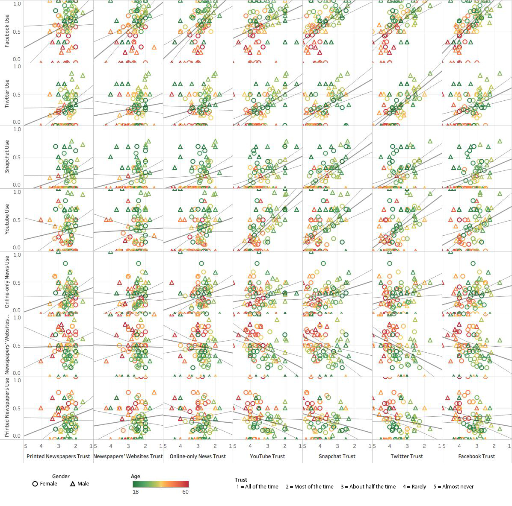
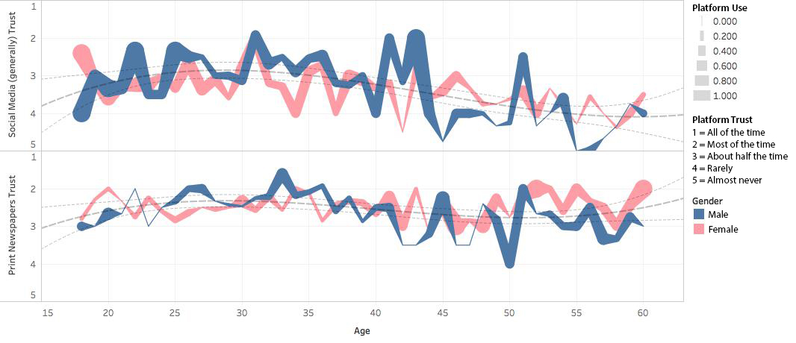
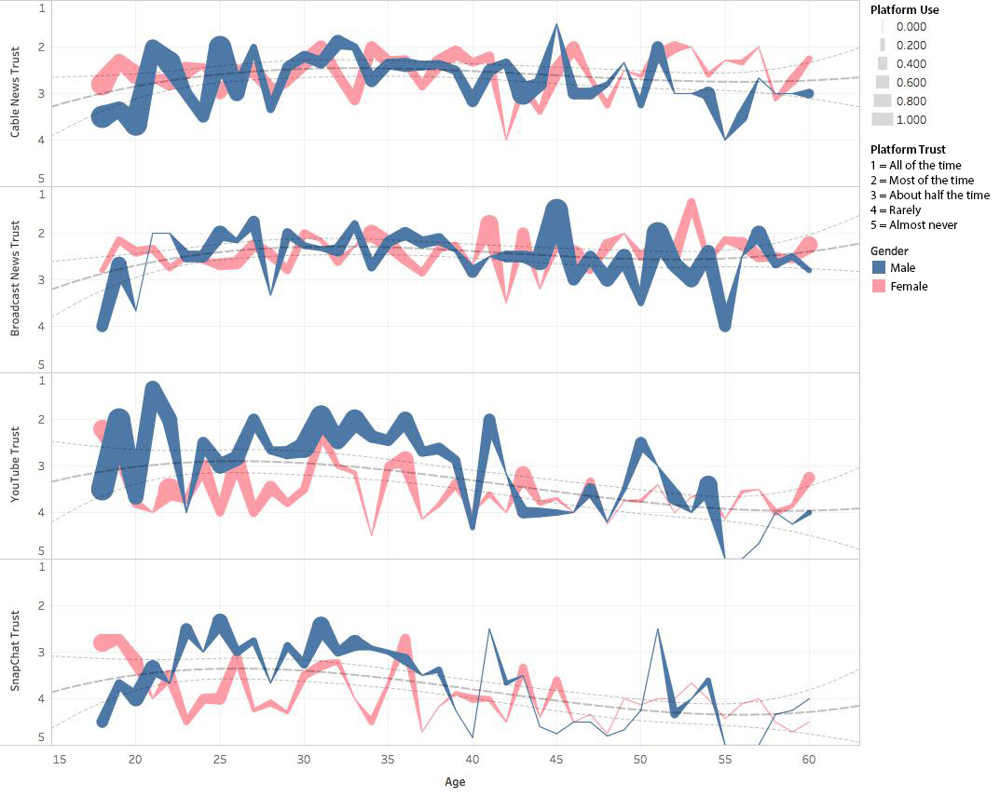

An informed public is essential to the continued functioning of a healthy democracy. There are many channels contributing to the information ecosystem in which we live today; these platforms vary in medium, levels of engagement, levels of use, and levels in trust among the general population.
Understanding how and why we inform ourselves via the media these channels produce is of critical importance in the matter of information quality and validity, especially in a culture of increasing dis/misinformation, “fake news”, and “alternative facts”. This report seeks to shed light on the “how” through data exploration and analysis.
Dataset
This is a dataset populated by an online survey asking which platforms participants have used to consume news information how much they trust various platforms in terms of news information. The survey was written about by BuzzFeed and the the raw dataset can be accessed in their GitHub repository. BuzzFeed has applied to their cross tabulations additional analytical participant weights including income, gender, race, and geographic location. For the sake of this assignment I have foregone this extra analysis and will be using the raw responses from only a few columns (an index or which is available here).
Platform Usage
Participants responded yes or no for “Social Media (generally)” and for each platform considered in the study. In my analysis this 0 - 1 range was normalized by averaging this response across subdividing metrics (eg - 33% of 19 year old males reported using Facebook as a news source).
Platform Trust
For each platform, participants responded on a likert scale of 1 - 5 (or 6 for “Don’t know” which has been excluded from this report) producing ordinal data representing “All the time” to “Almost Never”. These values are normalized by averaging responses and reversing the ordinal scale for the sake of visual clarity.
What ICT platforms are people using to access news information?
What sources of news information do people trust?
How do these metrics of use and trust change across age and gender?
Adapted Analysis Questions
How do usage of ICT platforms as a news source correlate with trust of the platform?
How do platform classification affect utilization and trust?
How do these trends of use and trust change across age and gender?
Discoveries & Insights
Initially I began my exploration by comparing trust and usage metrics separately across the various platforms in 12 dimensional scatterplot matrices. At this bird's eye view I could add additional filters and other metrics to see how these various attributes played out over the entire range of sources. Interesting pattern emerged such as age seriation and gender seriation. These patterns quickly became much more interesting when comparing trust to use as in Figure 1.
Social Media (generally) Use and Trust by Age and Gender
While extrapolating this approach across all news source platforms creates an extremely dense and interesting set of visualizations it is rather unwieldy and is very susceptible to occlusion, as seen in Figure 2.
Platform Use by Platform Trust

Up until this point I had been mapping color values to participant ages at the expense of encoding gender with a less effective shape. Desiring to better view any discrepancies between platform use, platform trust, and age I turned to a line chart representation. Figures 3 and 4 show platform use across age with platform trust being doubly encoded as line width and color saturation.
Social Media (generally) Use by Age and Trust
Extrapolating this approach across select platforms begins to reveal patterns of use and trust.
Platform Use by Age and Trust
Pivoting from in this visual encoding I sought to more prominently express the metrics of gender and trust and instead encoded platform trust to the Y-axis, platform use to the linewidth, and broke gender into two color encoded lines.
Social Media (generally) vs Printed Newspaper : Trust, Use, Gender, and Age

In true fashion, as I was considering the layout for figure 7 I attempted to categorize the different platforms for the first time, revolutionizing my mental model of the problem space and showing me that exploration is never over! Figure 6 shows how each platform can be categorized by method of presenting content to the user. While this needs much more research, even a rudimentary evaluation of platform content typology reveals clear differences between platforms.
Platforms by Information Medium
With this in mind I separated my small multiples by this new categorization, grouping multi-methodological “Hybrid” platforms and uni-methodological “Video” platforms and sure enough patterns immerged.
"Hybrid Platforms" Trust by Age, Gender, and Use
While the sources in Figure 8 are all video centric they are subdivided between more traditional platforms and social media platforms. This categorization is supported by the striking differences in trends, of particular interest is the gulf seen between younger men and women’s trust in social media video platforms.
"Video Platforms" Trust by Age, Gender, and Use

Gulf of Trust between Men and Women on Video Centric Social Media Platforms
Summary
After analysing this dataset at length there are few conclusions that can be drawn and more questions have been opened up for further exploration in future work. It would seem men between the ages of around 24 to 34 are very trusting of the news information from social media and traditional sources. As one may have expected, patterns in platform use and trust are prominently polarized by age, with older participants trending towards traditional sources and younger participants towards social media sources. Finally, I was quite surprised to see several platforms had strong trust among participants, despite not being identified as a source of news by the individuals.
I believe the next step is to begin understanding the reasons for some of these phenomenon, how platform categorization effect trust and use, and especially how these “hybrid” platforms play a part in the greater information ecosystem.